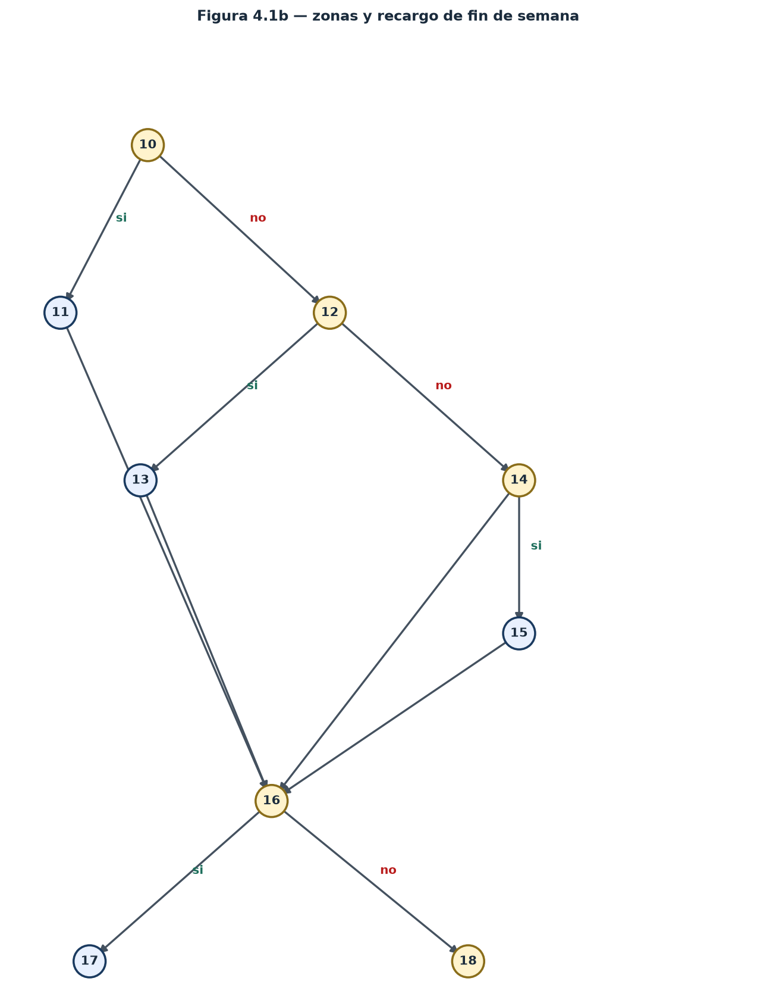
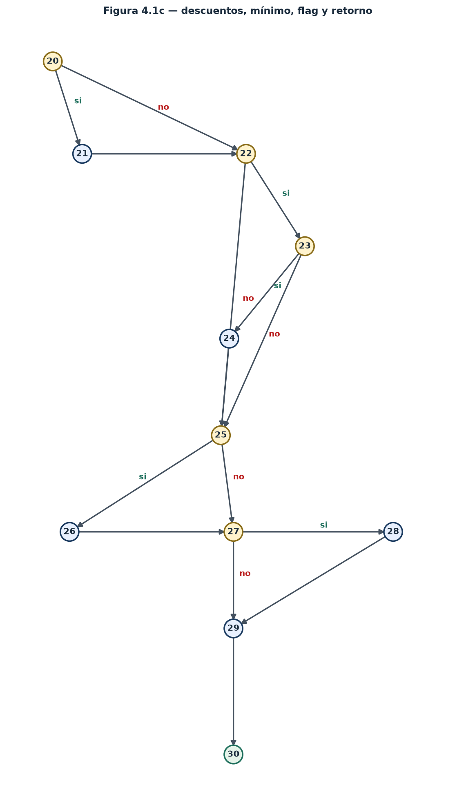
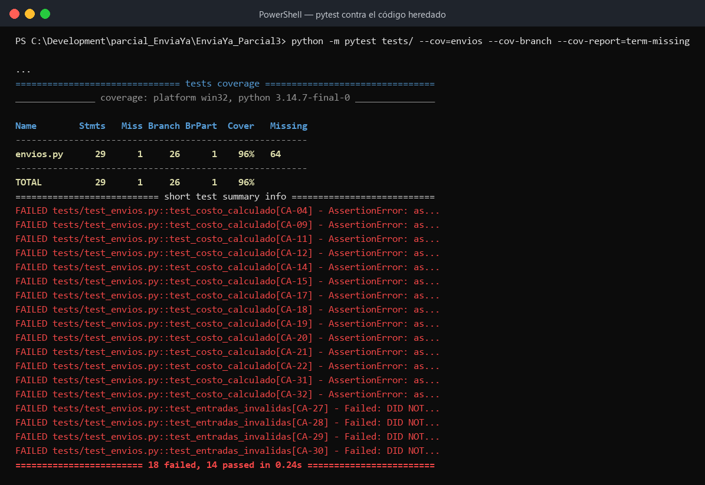
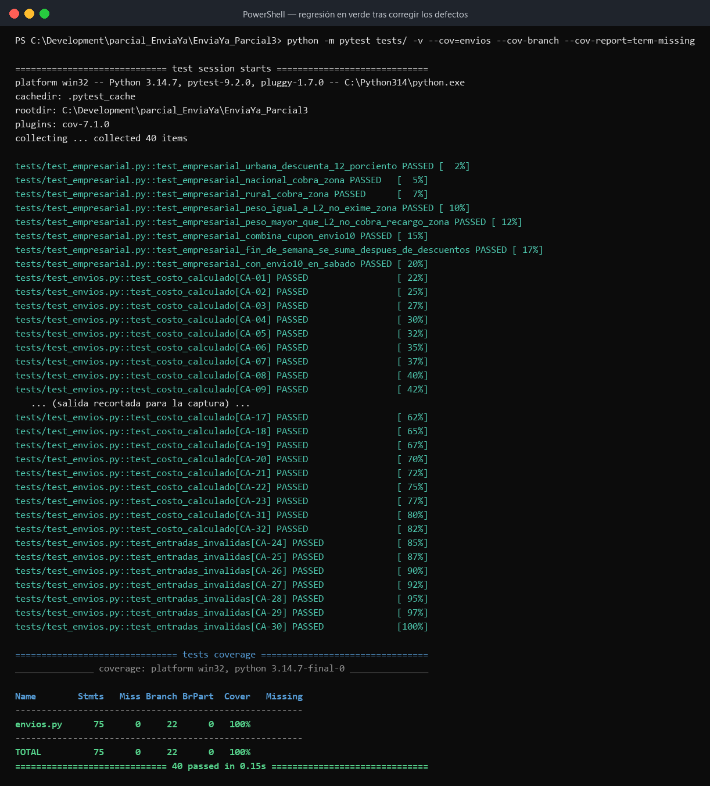
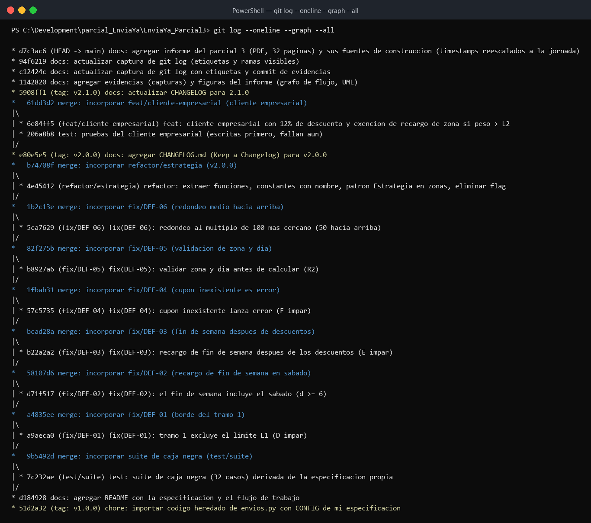

Figura 4.1a — Nodos 1–10: inicio, validación de peso y tramos.
EnvíaYa es una empresa de envíos de Riohacha cuyo sistema calcula el costo de cada envío con una función que dejó escrita un desarrollador que ya no trabaja allí. El código llegó a mis manos tal como estaba: funcionaba «a medias», tenía defectos frente a la especificación propia que me correspondió (código estudiantil 0182410133), malas prácticas y deuda técnica. En este informe documento el trabajo completo que hice para ponerlo en orden, siguiendo las ocho partes del enunciado del parcial: la especificación y las historias de usuario, el plan de pruebas, el diseño de casos de caja negra y de caja blanca, la automatización con pytest y el reporte de defectos, las correcciones y la refactorización con patrón Estrategia, la gestión de configuración con Git y la solicitud de cambio que me asignó la fórmula (A + F) mod 3 = 1 (nuevo cliente empresarial).
Encontré 6 defectos funcionales respecto a mi especificación. Los más costosos para la empresa: el recargo de fin de semana solo aplicaba el domingo, no se cobraba nada de fin de semana con el cliente correcto en sábado, el límite del tramo 1 estaba incluido aunque mi dígito D exige excluirlo, y el resultado se redondeaba truncando en vez de redondear al múltiplo de $100 más cercano. Las 32 pruebas que escribí fallaron 18 veces contra el código heredado y pasaron las 32 después de las correcciones; la cobertura pasó de 96 % a 100 % (sentencias y ramas). El sistema se versionó como v1.0.0 (heredado), v2.0.0 (correcciones + refactorización mayor por la eliminación del parámetro flag) y v2.1.0 (nuevo cliente empresarial, cambio menor y compatible).
Tomé los 6 últimos dígitos de mi código estudiantil 0182410133 y los llamé A, B, C, D, E y F. Con ellos calculé mis parámetros personalizados y, como pedía el enunciado, los dejé llenos también en el encabezado del envios.py original. Los valores y las reglas de paridad que dependen de ellos son la base de toda mi especificación y de las pruebas: si estos números están mal, todo lo demás está mal.
| A | B | C | D | E | F | PMAX | L1 | L2 | RR | RN | V | S | CAMBIO |
|---|---|---|---|---|---|---|---|---|---|---|---|---|---|
| 4 | 1 | 0 | 1 | 3 | 3 | 50 | 3 | 10 | 25 % | 40 % | 15 % | $2.000 | 1 |
| Parámetro | Fórmula | Cálculo | Valor | Significado |
|---|---|---|---|---|
| PMAX | 30 + 5·A | 30 + 5·4 | 50 kg | Peso máximo permitido por envío |
| L1 | 2 + (B mod 3) | 2 + (1 mod 3) | 3 kg | Límite del tramo 1 |
| L2 | 10 + C | 10 + 0 | 10 kg | Límite del tramo 2 (incluido) |
| RR | 10 + 5·(E mod 4) | 10 + 5·(3 mod 4) | 25 % | Recargo por zona rural |
| RN | 40 + 5·(F mod 3) | 40 + 5·(3 mod 3) | 40 % | Recargo por zona nacional |
| V | 10 + 5·(A mod 3) | 10 + 5·(4 mod 3) | 15 % | Descuento de cliente VIP |
| S | 2000 + 500·(C mod 4) | 2000 + 500·(0 mod 4) | $2.000 | Recargo de fin de semana |
| CAMBIO | (A + F) mod 3 | (4 + 3) mod 3 | 1 | Solicitud de cambio asignada (Parte 8): cliente empresarial |
| Dígito | Valor | ¿Par o impar? | Regla que me toca |
|---|---|---|---|
| D (tramo 1) | 1 | Impar | El tramo 1 no incluye el límite: peso < 3 kg. Con peso exactamente 3 kg se cotiza el tramo 2 ($9.000). |
| E (recargo fin de semana) | 3 | Impar | El recargo de fin de semana (+$2.000) se suma después de aplicar los descuentos. |
| B (cliente y cupón) | 1 | Impar | Se aplican ambos: primero el descuento del cliente y luego el del cupón. |
| F (cupón que no existe) | 3 | Impar | Un cupón que no existe es un error: se lanza ValueError. |
CONFIG no corresponden a mi código estudiantil, la nota es 0. Por eso antes de tocar el código heredado dejé escrito CONFIG con mis valores (L1=3, L2=10, RR=0,25, RN=0,40, V=0,15, RECARGO_FINDE=2000) y verifiqué el ejemplo del enunciado con mis propios números. Todo lo que sigue asume este cuadro como fuente de verdad.Esta es mi especificación completa, con mis números ya puestos. La redactó a partir del enunciado y de los parámetros de mi código; cada regla indica con su ID la fuente. Los valores límite llevan la aclaración de mi paridad (D impar excluye L1 del tramo 1, E impar pone el fin de semana después de los descuentos, B impar combina los dos descuentos y F impar convierte un cupón inexistente en error).
| ID | Regla (con mis valores) |
|---|---|
| R1 | El peso debe cumplir 0 < peso ≤ 50 kg (PMAX = 30 + 5·4 = 50). Admite decimales. Si no se cumple, se lanza ValueError("peso invalido"). |
| R2 | La zona debe ser urbana, rural o nacional; el día debe ser un entero entre 1 y 7 (6 = sábado, 7 = domingo). Si zona o día no son válidos, se lanza ValueError. |
| R3 | Tramo 1 (D impar: peso < 3 kg): $6.000. Tramo 2 (3 ≤ peso ≤ 10): $9.000. Sobre L2 (peso > 10 kg): $9.000 + $800 por cada kg sobre 10, de forma proporcional (admite decimales). |
| R4 | Recargo por zona: rural +25 % (RR = 25 %), nacional +40 % (RN = 40 %), urbana: sin recargo. Se aplica sobre el subtotal de la tarifa. |
| R5 | Fin de semana (día 6 = sábado y día 7 = domingo): +$2.000 (S = $2.000). E impar: el recargo se suma después de aplicar los descuentos. |
| R6 | Descuento de cliente: frecuente 5 %; VIP 15 % (V = 15 %). Cupón ENVIO10: 10 %. B impar: si hay ambos, se combinan aplicando primero el del cliente y después el del cupón. |
| R7 | Cupón que no existe (cualquier valor distinto de ENVIO10) → error (F impar): se lanza ValueError. Sin cupón (None) no pasa nada. |
| R8 | Costo mínimo: el resultado nunca es menor que $5.000. Redondeo: al múltiplo de $100 más cercano; los $50 redondean hacia arriba (redondeo medio hacia arriba). |
cliente desconocido (por ejemplo, escrito mal) se trata como normal: sin descuento. La especificación no define qué hacer y el enunciado solo exige error para zona y día; no inventé reglas extras. (2) dia acepta decimales solamente si son enteros exactos (p. ej. 2.0), igual que acepta enteros; 2.5 es inválido porque el día es un entero de 1 a 7. (3) El recargo de zona se calcula multiplicativamente sobre la tarifa del tramo (no aditivamente en pesos), igual que en el código heredado. (4) Un peso de exactamente 3 kg pertenece al tramo 2 porque D es impar.Tres historias cubren R1–R8 entre las tres. Cada criterio de aceptación está en formato Dado / Cuando / Entonces y apunta a la regla que verifica.
Como operadora del punto de envíos de Riohacha, quiero calcular el costo de un paquete a partir de su peso, zona, día y cupón, para informárselo al cliente antes de aceptarlo.
| # | Dado | Cuando | Entonces | Regla |
|---|---|---|---|---|
| CA1 | un paquete de 2 kg para zona urbana en un martes | calculo el costo | el resultado es $6.000 | R3, tramo 1 (peso < 3) |
| CA2 | un paquete de 3 kg para zona urbana | calculo el costo | el resultado es $9.000 (tramo 2, porque D impar excluye el límite 3 del tramo 1) | R3 |
| CA3 | un paquete de 12 kg para zona urbana | calculo el costo | el resultado es $10.600 = 9.000 + 2 × 800 | R3 |
| CA4 | un paquete de 4 kg para zona rural | calculo el costo | el resultado es $11.300 (9.000 × 1,25 = 11.250 redondeado hacia arriba a $100) | R4, R8 |
| CA5 | un peso de 0 kg, o de 51 kg | calculo el costo | el sistema lanza ValueError con el mensaje «peso invalido» | R1 |
Como cliente frecuente de EnvíaYa, quiero que mis descuentos, los recargos de fin de semana y el cupón ENVIO10 se apliquen con las reglas del sistema, para pagar lo que de verdad me toca.
| # | Dado | Cuando | Entonces | Regla |
|---|---|---|---|---|
| CA1 | cliente VIP, 4 kg, zona urbana, sin cupón | calculo el costo | $7.700 (9.000 × 0,85 = 7.650 redondeado a $100 → 7.700) | R6, R8 |
| CA2 | cliente VIP, 4 kg, cupón ENVIO10 (B impar: ambos descuentos) | calculo el costo | $6.900 (9.000 × 0,85 = 7.650; × 0,90 = 6.885 → 6.900) | R6 |
| CA3 | un sábado (día 6), cliente normal, 4 kg | calculo el costo | $11.000 (9.000 + 2.000) | R5 |
| CA4 | un sábado, cliente VIP (E impar: el finde se suma después de los descuentos) | calculo el costo | $9.700 (9.000 × 0,85 = 7.650; + 2.000 = 9.650 → 9.700) | R5, R8 |
| CA5 | un costo final de $4.590 (VIP + ENVIO10, 2 kg) | calculo el costo | el resultado nunca baja de $5.000 → $5.000 | R8 |
Como supervisora de la calidad del sistema, quiero que el cálculo rechace datos imposibles (pesos fuera de rango, zonas o días inválidos, cupones que no existen), para no cobrar a ciegas ni guardar basura en los envíos.
| # | Dado | Cuando | Entonces | Regla |
|---|---|---|---|---|
| CA1 | un día con valor 0, u 8, o 2.5 | calculo el costo | se lanza ValueError("dia invalido") | R2 |
| CA2 | una zona «insular» | calculo el costo | se lanza ValueError("zona invalida") (solo urbana, rural y nacional son válidas) | R2 |
| CA3 | el cupón «VERANO20» | calculo el costo | se lanza ValueError("cupon no existe") (F impar) | R7 |
| CA4 | un peso de 51 kg | calculo el costo | se lanza ValueError("peso invalido") | R1 |
| CA5 | un peso de 2 kg y cliente normal | calculo el costo | no lanza ningún error: el cupón es opcional y omitirlo es válido | R7 |
Requisito → historia → casos de prueba. La columna «Casos» apunta a la matriz de la Parte 3 (IDs CA-01 a CA-32); la fuente de verdad de cada caso es la especificación de la tabla 1.1.
| Requisito | Historias | Casos de prueba |
|---|---|---|
| R1 · Peso válido | HU-1, HU-3 | CA-24, CA-25, CA-26 |
| R2 · Zona y día válidos | HU-3 | CA-27, CA-28, CA-29 |
| R3 · Tarifas por tramo | HU-1 | CA-01 … CA-08 |
| R4 · Recargo por zona | HU-1, HU-2 | CA-09, CA-10, CA-11, CA-21, CA-31 |
| R5 · Fin de semana | HU-2 | CA-12, CA-13, CA-19, CA-20, CA-21, CA-22, CA-32 |
| R6 · Descuentos (B impar) | HU-2 | CA-14, CA-15, CA-16, CA-17, CA-18, CA-20, CA-21, CA-31 |
| R7 · Cupón no existe → error (F impar) | HU-3 | CA-30 |
| R8 · Costo mínimo y redondeo | HU-2 | CA-09, CA-11, CA-14, CA-15, CA-23 |
Este es el plan que seguí para probar el calculador. No es un documento decorativo: los niveles, la estrategia y los criterios se aplicaron de verdad durante el trabajo, y la evidencia está en la Parte 5 y en las capturas de pantalla.
Dentro: la función de cálculo del costo (validación de entradas, tramos, recargos por zona, descuentos, recargo de fin de semana, mínimo y redondeo), su comportamiento observable desde Python, la batería de pruebas automatizadas, la ejecución contra el código heredado y contra las versiones corregidas, y la evidencia de cobertura. Fuera: la interfaz de usuario (el sistema es un módulo sin GUI ni API HTTP), una base de datos, despliegues en producción y pruebas de carga o concurrencia.
| Nivel | Cómo se aplica a este caso | Artefacto |
|---|---|---|
| Unidad | Cada función extraída en la refactorización se ejercita por separado: validar_peso, validar_zona, validar_dia, tarifa_por_peso, aplicar_recargo_zona (una estrategia por zona), aplicar_descuentos, aplicar_fin_de_semana, redondear_100. Se mide con los casos de la Parte 3. | tests/test_envios.py |
| Integración | El flujo completo calcular_costo integra todos los componentes: validación → tarifa → zona → descuentos → fin de semana → mínimo → redondeo. Las interacciones (p. ej., descuento antes que fin de semana, cupón después del cliente) se prueban de extremo a extremo dentro del módulo. | Casos CA-19 a CA-22, CA-31, CA-32 |
| Sistema | El módulo se usa como sistema completo desde un cliente Python: import envios; envios.calc(...). Se verificó el comportamiento del sistema heredado tal como lo encontré, y luego el de v2.0.0 y v2.1.0. | Ejecuciones en este documento |
| Aceptación | Los criterios de aceptación de las historias HU-1 a HU-3 se traducen uno a uno en casos ejecutables; si todos están en verde, el sistema satisface las historias que le venden al negocio. | Tabla 1.1 ↔ matriz Parte 3 |
Estrategia. Combinación de dos enfoques: caja negra sobre la especificación (particiones, valores límite, tabla de decisión; técnica independiente de la implementación) y caja blanca sobre el código (grafo de flujo, complejidad ciclomática, caminos independientes y cobertura de sentencias y ramas con pytest-cov --cov-branch). Los casos de caja negra fallaron contra heredado 18 veces; los caminos de caja blanca guían qué falta cubrir. Para la solicitud de cambio (Parte 8) apliqué TDD: la prueba primero, la vi fallar, y luego implementé hasta el verde. Siempre regresión completa antes de etiquetar una versión.
Ambiente. Windows 11, Python 3.14.7, pytest 9.2.0, pytest-cov 7.1.0, Git 2.55.0.windows.5. Sin base de datos ni servicios externos; todo corre en local sobre el repositorio. Roles. Yo (Alex Valdelamar Bustamante) actué como equipo de calidad y mantenimiento: analista (especificación y casos), automatizador (suite pytest), corrector (6 defectos), refactorizador (patrón Estrategia), gestor de configuración (ramas, merges y tags) y dueño del informe. El docente actúa como dueño del producto y aprueba en la sustentación.
| # | Riesgo | Probabilidad / Impacto | Mitigación |
|---|---|---|---|
| R-01 | Ambigüedad en el redondeo («$50 redondean hacia arriba» no era explícito en el heredado: truncaba). | Alta / Media | Regla explícita en R8 y casos dedicados al filo de los $50 (CA-09: 11.250 → 11.300; CA-11: 13.250 → 13.300). |
| R-02 | Orden de aplicación fin de semana vs. descuentos (E impar invierte el orden lógico del heredado). | Alta / Alta | R5 documenta E impar; CA-19 a CA-22 y CA-32 fijan el orden; el defecto quedó registrado como DEF-03. |
| R-03 | Frontera del tramo 1 (D impar: el límite 3 no pertenece al tramo 1). | Alta / Media | Valores límite dedicados (CA-03: 2.99 → 6.000; CA-04: 3 → 9.000); DEF-01. |
| R-04 | Cupón inexistente silenciosamente ignorado (F impar exige error). | Media / Media | Prueba CA-30 con pytest.raises(ValueError); DEF-04. |
| R-05 | Regresión por la refactorización (quitar flag, extraer funciones, Estrategia). | Media / Alta | La misma suite (32 casos) valida el módulo antes y después; después del refactor se agregaron las 8 pruebas del empresarial y la cobertura quedó en 100 %. |
| R-06 | Falsos positivos por entorno (versión de Python/pytest distinta en la máquina del docente). | Baja / Media | Versiones exactas documentadas aquí; los comandos usados son los mismos en cualquier entorno con pytest instalado. |
Entrada. (1) Código heredado importado y etiquetado v1.0.0; (2) CONFIG con mis valores; (3) especificación R1–R8 escrita y revisada contra los parámetros; (4) suite de 32 casos escrita y trazable; (5) ambiente con pytest y pytest-cov funcionando. Salida. (1) 100 % de las pruebas en verde (logrado: 40/40); (2) cobertura de sentencias y ramas ≥ 95 % (logrado: 100 %); (3) cero defectos de severidad mayor abiertos (los 6 defectos quedaron cerrados, ver DEF-01 a DEF-06); (4) documentación de configuración (tags, ramas, CHANGELOG) y evidencia de regresión en el repositorio; (5) informe con las evidencias (capturas) adjunto.
Todos los casos de esta sección se diseñaron desde la especificación (caja negra), sin mirar el código heredado ni su lógica. Los resultados esperados se calcularon a mano siguiendo R1–R8. Si alguna vez el «esperado» no cuadraba con lo que hacía el sistema, el error era del sistema y no de mi cálculo; quedó registrado como defecto en la Parte 5.
| Entrada | Partición válida | Partición inválida | Representante(s) |
|---|---|---|---|
| peso (kg, decimal) | P1: 0 < peso ≤ 50 | P4: peso ≤ 0 · P5: peso > 50 | 2 · 25 · 50 / 0 · −1 · 51 |
| peso — subpartición por tramo | P1a: 0 < peso < 3 (tramo 1) · P1b: 3 ≤ peso ≤ 10 (tramo 2) · P1c: peso > 10 (sobre L2) | — | 2 / 5 / 12 |
| zona | P2: urbana · P3: rural · P4: nacional | P5: cualquier otra (p. ej. insular) | urbana · rural · nacional / insular |
| cliente | P6: normal · P7: frecuente · P8: vip | P9: desconocido → se trata como normal (supuesto documentado) | normal · frecuente · vip |
| dia (entero 1–7) | P10: 1 (lunes) … P16: 7 (domingo) | P17: 0 · P18: 8 o más · P19: no entero (2.5) o no numérico | 1 · 6 · 7 / 0 · 8 · 2.5 |
| cupón (opcional) | P20: ausente (None) · P21: ENVIO10 | P22: cualquier otro valor (VERANO20…) → error (F impar) | None · ENVIO10 / VERANO20 |
Peso es la entrada con más bordes: 0, L1 = 3 (mi D impar excluye el límite), L2 = 10 (incluido) y PMAX = 50.
| Punto de frontera | Entradas | Esperado | Técnica |
|---|---|---|---|
| 0 (límite inferior R1) | peso = 0 | ValueError("peso invalido") | VL |
| 0 (mínimo válido) | peso = 0.01 | $6.000 | VL |
| L1 − ε = 2.99 (borde del tramo 1) | peso = 2.99, urbana, normal, d=2 | $6.000 | VL |
| L1 = 3 (D impar: fuera del tramo 1) | peso = 3, urbana, normal, d=2 | $9.000 (tramo 2) | VL |
| L2 = 10 (incluido, tramo 2) | peso = 10, urbana, normal, d=2 | $9.000 | VL |
| L2 + ε = 10.5 (sobre L2) | peso = 10.5, urbana, normal, d=2 | $9.400 | VL |
| PMAX = 50 (incluido) | peso = 50, urbana, normal, d=2 | $41.000 | VL |
| PMAX + ε = 50.01 (fuera de rango) | peso = 50.01 | ValueError("peso invalido") | VL |
Nota: en mi especificación el D impar hace que el borde 3 kg no pertenezca al tramo 1; para un compañero con D par, el mismo peso 3 kg estaría en el tramo 1 y daría $6.000. Por eso la frontera es la parte más peligrosa de copiar entre compañeros.
Fijé contexto estable (peso = 4 kg → tramo 2 → $9.000; zona urbana; sin recargo) y moví las tres dimensiones del enunciado: cliente (normal / frecuente / vip), cupón (ninguno / ENVIO10 / inexistente) y fin de semana (d=2 vs sábado d=6). Ojo con el par B/E impar: los dos descuentos se acumulan (frecuente 5 % o vip 15 % y luego cupón 10 %) y el recargo de fin de semana se suma después de todo. Escenario weekday = día 2; fin de semana = día 6 (sábado).
| Cliente | Cupón | Día 2 (entre semana) | Día 6 (sábado) |
|---|---|---|---|
| normal | ninguno | 9.000 | 11.000 |
| normal | ENVIO10 | 8.100 | 10.100 |
| normal | inexistente (VERANO20) | ValueError | ValueError |
| frecuente (−5 %) | ninguno | 8.600 | 10.600 |
| frecuente (−5 %) | ENVIO10 (ambos) | 7.700 | 9.700 |
| frecuente (−5 %) | inexistente (VERANO20) | ValueError | ValueError |
| vip (−15 %) | ninguno | 7.700 | 9.700 |
| vip (−15 %) | ENVIO10 (ambos) | 6.900 | 8.900 |
| vip (−15 %) | inexistente (VERANO20) | ValueError | ValueError |
Ejemplo de celda «vip · ENVIO10 · sábado»: 9.000 × 0,85 = 7.650; × 0,90 = 6.885; sábado (E impar, después de descuentos): + 2.000 = 8.885 → redondeo al $100 → 8.900. Los pares «frecuente + sábado» y «frecuente + domingo» ejercitan los defectos del heredado: en sábado no cobraba el finde (daba 8.500) y en domingo lo cobraba antes del descuento y truncando (10.400). La regla correcta da 8.550 + 2.000 = 10.550 → 10.600 en ambos días.
Columnas: ID, requisito, entradas, resultado esperado calculado a mano y técnica que lo generó (PE = particiones de equivalencia, VL = valores límite, TD = tabla de decisión). "err" significa que se espera que la función lance ValueError.
| ID | Req. | Peso | Zona | Cliente | Día | Cupón | Esperado ($) | Técnica |
|---|---|---|---|---|---|---|---|---|
| CA-01 | R3 | 2 | urbana | normal | 2 | — | 6.000 | PE |
| CA-02 | R3 | 2.5 | urbana | normal | 2 | — | 6.000 | PE |
| CA-03 | R3 | 2.99 | urbana | normal | 2 | — | 6.000 | VL |
| CA-04 | R3 | 3 | urbana | normal | 2 | — | 9.000 | VL |
| CA-05 | R3 | 10 | urbana | normal | 2 | — | 9.000 | VL |
| CA-06 | R3 | 10.5 | urbana | normal | 2 | — | 9.400 | VL |
| CA-07 | R3 | 12 | urbana | normal | 2 | — | 10.600 | PE |
| CA-08 | R3 | 50 | urbana | normal | 2 | — | 41.000 | VL |
| CA-09 | R4 | 4 | rural | normal | 2 | — | 11.300 | PE (redondeo ↑) |
| CA-10 | R4 | 4 | nacional | normal | 2 | — | 12.600 | PE |
| CA-11 | R4 | 12 | rural | normal | 2 | — | 13.300 | PE (redondeo ↑) |
| CA-12 | R5 | 4 | urbana | normal | 6 | — | 11.000 | TD (sábado) |
| CA-13 | R5 | 4 | urbana | normal | 7 | — | 11.000 | TD (domingo) |
| CA-14 | R6 | 4 | urbana | frecuente | 2 | — | 8.600 | TD |
| CA-15 | R6 | 4 | urbana | vip | 2 | — | 7.700 | TD |
| CA-16 | R6 | 4 | urbana | normal | 2 | ENVIO10 | 8.100 | TD |
| CA-17 | R6 | 4 | urbana | vip | 2 | ENVIO10 | 6.900 | TD |
| CA-18 | R6 | 4 | urbana | frecuente | 2 | ENVIO10 | 7.700 | TD |
| CA-19 | R5 | 4 | urbana | vip | 6 | — | 9.700 | TD |
| CA-20 | R5 | 4 | urbana | vip | 6 | ENVIO10 | 8.900 | TD |
| CA-21 | R4 | 4 | rural | vip | 6 | ENVIO10 | 10.600 | TD (completo) |
| CA-22 | R5 | 4 | urbana | frecuente | 6 | — | 10.600 | TD |
| CA-23 | R8 | 2 | urbana | vip | 2 | ENVIO10 | 5.000 | PE (mínimo) |
| CA-24 | R1 | 0 | urbana | normal | 2 | — | err | PE |
| CA-25 | R1 | −1 | urbana | normal | 2 | — | err | PE |
| CA-26 | R1 | 51 | urbana | normal | 2 | — | err | PE |
| CA-27 | R2 | 4 | insular | normal | 2 | — | err | PE |
| CA-28 | R2 | 4 | urbana | normal | 0 | — | err | VL |
| CA-29 | R2 | 4 | urbana | normal | 8 | — | err | VL |
| CA-30 | R7 | 4 | urbana | normal | 2 | VERANO20 | err | PE |
| CA-31 | R4 | 12 | nacional | vip | 7 | ENVIO10 | 13.400 | TD (completo) |
| CA-32 | R5 | 4 | urbana | frecuente | 7 | — | 10.600 | TD |
Los casos en negrita son los que ejercicionan los seis defectos (DEF-01 a DEF-06). Un caso «error» significa ValueError: CA-24 a CA-30 lanzan excepción por la entrada inválida indicada.
Como en el ejemplo del enunciado, aquí está la cuenta completa de los casos más representativos. Todos los totales llevan redondeo final al múltiplo de $100 más cercano con el $50 hacia arriba (R8).
3 < 3? No (D impar: el tramo 1 no incluye el límite). ¿3 ≤ 10? Sí → tramo 2 → $9.000.Aquí analicé el código por dentro: grafo de flujo, complejidad ciclomática, caminos independientes y cobertura. Trabajé sobre la versión heredada (v1.0.0), que es la que corresponde a esta parte del enunciado; las líneas citadas son las de envios.py original.
calcEl grafo tiene 30 nodos y 43 aristas. Los nodos predicado (d1–d14) son rombos amarillos; las acciones, rectángulos azules; inicio/fin, verdes; la excepción, roja. Para que quepa legible lo dividí en tres figuras. La leyenda va debajo.


| Nº | Línea v1.0.0 | Nodo | Nº | Línea v1.0.0 | Nodo |
|---|---|---|---|---|---|
| 1 | — | inicio | 16 | 52 | d8 · ¿d > 6? (finde) |
| 2 | 37 (p ≤ 0) | d1 · predicado | 17 | 53 | t = t + S |
| 3 | 37 (p > 50) | d2 · predicado | 18 | 54 | d9 · ¿c == «frecuente»? |
| 4 | 38 | raise ValueError | 19 | 55 | t = t − 5 % |
| 5 | 39 (p <= L1) | d3 · predicado | 20 | 56 | d10 · ¿c == «vip»? |
| 6 | 40 | t = 6000 | 21 | 57 | t = t − V |
| 7 | 41 (p <= L2) | d4 · predicado | 22 | 58 (cup != None) | d11 · predicado |
| 8 | 42 | t = 9000 | 23 | 59 (cup == ENVIO10) | d12 · predicado |
| 9 | 44 | t = 9000 + (p−L2)·800 | 24 | 60 | t = t − 10 % |
| 10 | 45 | d5 · ¿z == urbana? | 25 | 61 (t < 5000) | d13 · predicado |
| 11 | 46 | t = t (sin efecto) | 26 | 62 | t = 5000 |
| 12 | 47 | d6 · ¿z == rural? | 27 | 63 (flag) | d14 · predicado |
| 13 | 48 | t = t + t·RR | 28 | 64 | print("costo:", t) |
| 14 | 49 | d7 · ¿z == nacional? | 29 | 65 | return int(t/100)·100 |
| 15 | 50 | t = t + t·RN | 30 | — | fin |
Flechas entrantes a «raise»: desde d1 (sí) y d2 (sí). Si la excepción salta, el flujo termina en el nodo 30 (fin) sin pasar por el cálculo: el grafo distingue «fin normal» de «fin por excepción» con el mismo nodo terminal. El camino «zona desconocida» (d7 → no, ni urbana ni rural ni nacional) sigue directo al nodo 16 sin aplicar recargo: ese es exactamente el agujero que reporta DEF-05.
| Método | Fórmula | Cálculo | V(G) |
|---|---|---|---|
| 1. Aristas y nodos | V(G) = E − N + 2P | 43 − 30 + 2·1 | 15 |
| 2. Nodos predicado | V(G) = P + 1 | 14 predicados (d1–d14, incluyendo las dos condiciones de la línea 37) + 1 | 15 |
| 3. Regiones | V(G) = caras del grafo conexo | 14 caras acotadas + 1 exterior | 15 |
Que salgan las tres es señal de que el grafo está bien construido. Una complejidad de 15 para una función de 30 líneas dice algo simple: calc hace demasiado. Cada elif amontona una decisión más en la misma función y todas las combinaciones posibles se prueban desde afuera.
Con V(G) = 15 hay 15 caminos linealmente independientes que recorren todas las decisiones al menos una vez. Esto es la base mínima para cubrir la estructura (cobertura de nodos garantizada):
| Camino | Recorrido (resumen) | Qué ejercita | Lo recorre |
|---|---|---|---|
| P1 | 1-2-4 | peso ≤ 0 → excepción | CA-25 (−1 kg), CA-24 (0 kg) |
| P2 | 1-2-3-4 | peso > 50 → excepción | CA-26 (51 kg) |
| P3 | 1-2-3-5-6-10-11-16-18-20-22-25-27-29-30 | tramo 1 · urbana · sin finde · normal · sin cupón | CA-01 |
| P4 | …-5-7-8-10-…-29-30 | tramo 2 | CA-04 |
| P5 | …-5-7-9-10-…-29-30 | sobre L2 (else) | CA-07 |
| P6 | …-10-12-13-…-29-30 | zona rural | CA-09 |
| P7 | …-10-12-14-15-…-29-30 | zona nacional | CA-10 |
| P8 | …-16-17-…-29-30 | recargo de fin de semana | CA-12, CA-13 |
| P9 | …-18-19-…-29-30 | descuento frecuente | CA-14 |
| P10 | …-18-20-21-…-29-30 | descuento VIP | CA-15 |
| P11 | …-22-23-24-…-29-30 | cupón ENVIO10 | CA-16, CA-17, CA-18 |
| P12 | …-22-23-25-…-29-30 | cupón no válido (el heredado lo ignora) | CA-30 |
| P13 | …-22-25-…-29-30 | sin cupón (rama falsa de d11) | CA-05, CA-13 |
| P14 | …-25-26-…-29-30 | mínimo: t < 5000 → t = 5000 | CA-23 |
| P15 | …-27-28-29-30 | flag = True → imprime «costo: …» | Ejecución manual calc(2, 'urbana', 'normal', 2, flag=True) → imprime costo: 6000 y retorna 6000. (El flag se eliminó en v2.0.0.) |
Sentencias. La única línea que ningún caso de la suite ejecuta es la 64 (print("costo:", t)): la suite nunca llama con flag=True. Por tanto, cobertura de sentencias = 28/29 ≈ 96,6 % (pytest-cov con --cov-branch reporta 96 % total, con 1 sentencia sin cubrir y la rama correspondiente parcial). Lo reconfirmé con una ejecución manual: costo: 6000.
Ramas. Las 14 decisiones quedan ejercitadas en ambas direcciones, con una salvedad: el arco flag → print (27 → 28, rama verdadera de d14) no lo toma ningún caso. Tabla de rastreo de ramas:
| Decisión | Rama «v» | Rama «f» |
|---|---|---|
| d1 · peso ≤ 0 | CA-24, CA-25 | CA-01… (todos los demás) |
| d2 · peso > 50 | CA-26 | CA-01… (todos los demás) |
| d3 · p ≤ L1 | CA-01…CA-04 | CA-05… (p ≥ 10) |
| d4 · p ≤ L2 | CA-05, CA-06 | CA-07, CA-08, CA-11, CA-31 |
| d5 · z == urbana | CA-01 | CA-09 |
| d6 · z == rural | CA-09 | CA-10, CA-27 |
| d7 · z == nacional | CA-10 | CA-12, CA-27 |
| d8 · d > 6 | CA-13, CA-31, CA-32 | CA-12 (d = 6, sábado) |
| d9 · c == frecuente | CA-14 | CA-01, CA-15 |
| d10 · c == vip | CA-15 | CA-01, CA-14 |
| d11 · cup != None | CA-16, CA-30 | CA-01, CA-13 |
| d12 · cup == ENVIO10 | CA-16, CA-17, CA-18, CA-20, CA-21, CA-31 | CA-30 |
| d13 · t < 5000 | CA-23 | CA-01 |
| d14 · flag | (ninguno; ejecución manual) | todos los de la suite |
flag era parte del problema (ver DEF-06/ smells, revisión en la Parte 6) y se eliminó en v2.0.0. Tras la refactorización, pytest-cov --cov-branch reporta 100 % de sentencias y ramas (ver Parte 5 y Parte 6).Automaticé los 32 casos de la Parte 3 con pytest, parametrizando por IDs (CA-01…CA-32) en tests/test_envios.py. La regla era ejecutar exactamente la suite descrita en el enunciado contra el heredado, sin tocar envios.py. El resultado real de aquella primera corrida:

De los 32 casos, los 18 que fallaban no eran fallas del cálculo: eran exactamente las desviaciones entre mi especificación y lo que el heredado hacía — los 6 defectos que reporto abajo, ejercitados desde varios ángulos (un mismo defecto se manifestaba en varios casos, p. ej. DEF-02 y DEF-06 en los mismos pedidos de sábado).
Comando usado: python -m pytest tests/ --cov=envios --cov-branch --cov-report=term-missing.
| Versión medida | Sentencias | Ramas | Resultado |
|---|---|---|---|
| v1.0.0 (heredado) | 29 stmts, 1 sin cubrir (línea 64, print) · 96 % | 26 ramas, 1 parcial (arco flag→print) · 96 % | 18 failed · 14 passed |
| v2.0.0 (corregido + refactorizado) | 71 stmts, 0 sin cubrir · 100 % | 20 ramas, 0 parciales · 100 % | 32 passed |
| v2.1.0 (con empresarial) | 75 stmts, 0 sin cubrir · 100 % | 22 ramas, 0 parciales · 100 % | 40 passed |
Formato de registro: ID, título, requisito que incumple, pasos para reproducir, esperado, obtenido, severidad y prioridad justificadas. Los valores obtenidos salen de ejecutar el heredado de verdad (lo reproduje con python -c "import envios; envios.calc(...)" para cada caso).
| ID | Título y requisito | Pasos para reproducir | Esperado / Obtenido | Severidad · Prioridad (justificación) |
|---|---|---|---|---|
| DEF-01 | Tramo 1 incluye el límite L1 · incumple R3 (D impar: peso < 3) | calc(3, "urbana", "normal", 2) |
$9.000 (tramo 2) → obtuvo $6.000 | Mayor · Media. Solo afecta el peso exactamente 3,00 kg y paga de menos; no todos los pedidos caen ahí, por eso Media. |
| DEF-02 | Fin de semana solo el domingo (d > 6) · incumple R5 |
calc(4, "urbana", "normal", 6) |
$11.000 (sábado + $2.000) → obtuvo $9.000 | Mayor · Alta. Todo envío de sábado (1 de cada 2 días del finde) va sin recargo: sangría sistemática de $2.000 por envío. |
| DEF-03 | Fin de semana se cobra ANTES de los descuentos · incumple R5 (E impar) | calc(4, "urbana", "frecuente", 7) |
$10.600 ((9000·0,95)+2000, redondeado) → obtuvo $10.400 ((9000+2000)·0,95 truncado) | Mayor · Alta. Todo pedido con descuento en finde sale mal calculado; afecta justo a los clientes fidelizados. |
| DEF-04 | Cupón que no existe se ignora en silencio · incumple R7 (F impar) | calc(4, "urbana", "normal", 2, "VERANO20") |
ValueError("cupon no existe") → obtuvo $9.000 sin error | Menor · Media. Caso raro (cupón mal digitado), pero el cliente cree tener 10 % de descuento y no lo recibe sin aviso. |
| DEF-05 | No valida zona ni día · incumple R2 | calc(4, "insular", "normal", 2) · calc(4, "urbana", "normal", 0) · calc(4, "urbana", "normal", 8) |
ValueError("zona invalida") / ValueError("dia invalido") → obtuvo $9.000 / $9.000 / $11.000 sin error | Mayor · Alta. Datos imposibles aceptados en silencio: p. ej. «Rural» con R mayúscula se cobra sin el 25 %; día 8 pasa como hábil; inconsistencia en los registros. |
| DEF-06 | Redondeo trunca al múltiplo de $100 · incumple R8 | calc(4, "rural", "normal", 2) |
$11.300 (11.250 ↑ al $100) → obtuvo $11.200 | Menor · Media. Sistemático y a favor de la empresa a costa del cliente (hasta −$99 por envío); mina la confianza. |
| Métrica | Resultado | Detalle |
|---|---|---|
| % de casos que pasan (heredado) | 14/32 = 43,75 % | 18 casos de caja negra fallando. Tras correcciones: 32/32 = 100 %. Tras la Parte 8: 40/40 = 100 %. |
| Defectos por severidad | Mayor 4 · Menor 2 · Crítica 0 | Mayor: DEF-01, DEF-02, DEF-03, DEF-05 (66,7 %) · Menor: DEF-04, DEF-06 (33,3 %). |
| Defectos por prioridad | Alta 3 · Media 3 | Alta: DEF-02, DEF-03, DEF-05 (66,7 %) · Media: DEF-01, DEF-04, DEF-06. |
| Densidad de defectos | 20,7 / 100 líneas de código | 6 defectos / 29 sentencias contadas por coverage.py. Método alternativo: 6 / 65 líneas físicas = 9,2 por 100 líneas físicas. |
| Cobertura de sentencias | 96 % → 100 % | Heredado: 1 sentencia sin cubrir (print, línea 64). Final (v2.1.0): 75/75. |
| Cobertura de ramas | 96 % → 100 % | Heredado: 1 rama parcial (arco flag→print). Final (v2.1.0): 0 parciales. |
| # | Mal olor (nombre técnico) | Línea v1.0.0 | Deuda técnica que genera |
|---|---|---|---|
| 1 | Número mágico (magic number) — PMAX = 50 quemado en la condición del peso | 37 | El valor de negocio máximo vive en la lógica, no en CONFIG: si la empresa cambia PMAX hay que editar la condición y se puede dejar desactualizada la doc; además nadie sabe qué significa «50» sin leer contexto. |
| 2 | Números mágicos de negocio — tarifas 6000 / 9000 / 800 y porcentajes (0.05, 0.10) | 39–44, 54–60 | Remarketing de tarifas imposible sin tocar la función; cualquier ajuste comercial rompe la confianza de las pruebas; los cambios se hacen por «prueba y error» en producción. |
| 3 | Flag argument (parámetro booleano flag con significado oculto) | 36, 63–64 | La función hace dos cosas (calcular y avisar); el booleano no se autodocumenta (¿flag qué?); quien la llama debe saber un secreto interno; dificulta probar «sin imprimir». |
| 4 | Variables de una letra (p, z, c, d, t) | 36–65 | Lectura críptica; cualquier mantenedor reconstruye el significado con un mapa mental; sube el costo de cada cambio posterior. |
| 5 | Código muerto / no-op (t = t en rama de zona urbana) | 46 | Ruido puro; hace dudar si falta un recargo o un comportamiento; rompe la lectura lineal «si → efecto». |
| 6 | Comparación con None con != (en vez de is not) | 58 | Frágil ante cualquier objeto con __eq__ rara y contradice la semántica de identidad de Python; invita a bugs sutiles al crecer el modelo. |
| 7 | Método largo / complejidad ciclomática 15 (calc monolítico) | 36–65 | Cada corrección obliga a entender 15 decisiones a la vez; el riesgo de regresión en cada toque es altísimo; revisión entre pares casi imposible. |
| 8 | Redondeo truncado como «regla oculta» (int(t / 100) * 100) | 65 | Una decisión de negocio (cómo redondear) escondida en una expresión; nadie la ve al leer «costo»; reproduce DEF-06. |
| 9 | Efectos secundarios I/O en cálculo (print dentro de la función) | 63–64 | Mezcla capas: el módulo no puede reusarse (API, batch, pruebas) sin ruido en consola o efectos parásitos; rompe la regla de una sola responsabilidad. |
| Tipo | Rama / cambio | Por qué |
|---|---|---|
| Correctivo | fix/DEF-01…fix/DEF-06 | Corrigen defectos que el software cometía frente a su propia especificación; no agregan funcionalidad ni adaptan a nada: devuelven al sistema a su comportamiento exigido (R1–R8). |
| Perfectivo | refactor/estrategia (sin cambiar la especificación ni el comportamiento exigido) | Extraer funciones, constantes con nombre, patrón Estrategia, eliminar flag: misma salida para las mismas entradas válidas; mejora legibilidad, pruebas y economía de cambio sin añadir requisitos. |
| Preventivo | test/suite, validación de entradas (DEF-05 como defensa), cobertura 100 % | Disminuyen la probabilidad de fallas futuras: una entrada imposible queda rechazada en la frontera antes de causar cálculos erróneos; la suite detecta cualquier ruptura en segundos. |
| Adaptativo | feat/cliente-empresarial (Parte 8) | Adecúa el sistema a un negocio que cambió: un nuevo segmento de clientes (empresarial, 12 %) con una condición nueva (sin recargo de zona sobre L2). Es funcionalidad nueva motivada por el negocio, no una corrección. |
Cuatro compromisos concretos, en este orden:
validar_peso / validar_zona / validar_dia / validar_cupon, tarifa_por_peso, aplicar_recargo_zona, aplicar_descuentos, aplicar_fin_de_semana, redondear_100 y el orquestador calcular_costo.TARIFA_TRAMO_1 = 6000, TARIFA_TRAMO_2 = 9000, RECARGO_KG_EXTRA = 800, COSTO_MINIMO = 5000, DESC_FRECUENTE = 0.05, DESC_CUPON = 0.10, CUPON_VALIDO = "ENVIO10", y PMAX entró a CONFIG["PMAX"] = 50. Quien lee el código ya no traduce números.flag: el contrato queda calcular_costo(peso, zona, cliente, dia, cupon=None); calc sobrevive como alias de compatibilidad sin flag, y la línea de print desapareció. Esto rompe la firma: por eso la versión pasa de 1.x a 2.0.0.EstrategiaZona (abstracta) con ZonaUrbana (sin recargo), ZonaRural (×1,25) y ZonaNacional (×1,40), elegidas por un registro ESTRATEGIAS_ZONA. Agregar la próxima zona ya no toca ningún elif: se agrega una clase y una entrada al registro. Diagrama de clases:
Los seis defectos de la Parte 5 se corrigieron en su propia rama fix/DEF-XX, fusionada a main con --no-ff en este orden: DEF-01 (borde tramo 1) → DEF-02 (sábado) → DEF-03 (orden finde) → DEF-04 (cupón inexistente) → DEF-05 (validación zona/día) → DEF-06 (redondeo). Cada corrección dejó la suite algo más verde: al integrar DEF-06 ya pasaban 32/32. Ningún defecto quedó abierto ni «aceptado como limitación».
Después de las correcciones y del refactor ejecuté la misma suite completa; el resultado:

Estrictamente como regresión del heredado, el umbral se verificó en v2.0.0 con 32/32 verdes y cobertura 100 % (ver tabla 5.1); la corrida de la figura incluye además las 8 pruebas de la solicitud de cambio de la Parte 8.
| Métrica | v1.0.0 (heredado) | v2.1.0 | Lectura |
|---|---|---|---|
Complejidad ciclomática de la función principal (calc/calcular_costo) | 15 | 2 | El orquestador quedó plano; la decisión interna con más ramas es aplicar_descuentos (V=5, antes parte del 15). Por función: ninguna supera V=5. |
| Líneas de código | 65 físicas (29 sentencias) | 157 físicas (75 sentencias) | Crece por validación explícita, clases de estrategia y el alias de compatibilidad — cambio deliberado y barato de leer, no duplicación. |
| Cobertura de sentencias | 96 % | 100 % | Sin sentencias muertas; el print se eliminó con flag. |
| Cobertura de ramas | 96 % (1 rama parcial) | 100 % | Ninguna rama sin probar. |
| Parámetros de la función | 5 + flag oculta | 5 (sin flag) | Contrato explícito: peso, zona, cliente, día, cupón. |
| Robustez ante entradas inválidas | Solo peso | Peso, zona, día, cupón | Toda entrada imposible lanza ValueError (R1, R2, R7). |
Repositorio Git con rama principal main, ramas de trabajo de vida corta, integración con --no-ff y tres etiquetas de versión. El código heredado entra como v1.0.0. El entregable es el repositorio (enlace o .zip con la carpeta .git incluida).
El primer commit del repositorio importa envios.py tal como lo encontré, con el CONFIG llenado con mis valores (instrucción del enunciado: «llena CONFIG con tus valores. No cambies nada más»). Sobre ese estado se colocó la etiqueta v1.0.0:
* 51d2a32 (tag: v1.0.0) chore: importar codigo heredado de envios.py con CONFIG de mi especificacion
| Rama | Propósito | Rama origen → destino | Integración |
|---|---|---|---|
test/suite | Suite de caja negra (32 casos) | main → main | merge --no-ff → 9b5492d |
fix/DEF-01 | Tramo 1 excluye el límite (D impar) | main → main | merge --no-ff (a4835ee) |
fix/DEF-02 | Fin de semana incluye sábado | main → main | merge --no-ff (58107d6) |
fix/DEF-03 | Recargo finde después de descuentos (E impar) | main → main | merge --no-ff (bcad28a) |
fix/DEF-04 | Cupón inexistente → ValueError (F impar) | main → main | merge --no-ff (1fbab31) |
fix/DEF-05 | Validación de zona y día (R2) | main → main | merge --no-ff (82f275b) |
fix/DEF-06 | Redondeo al $100 más cercano, 50 hacia arriba (R8) | main → main | merge --no-ff (1b2c13e) |
refactor/estrategia | Extraer funciones, constantes, Estrategia, flag fuera | main → main | merge --no-ff (b74708f) |
feat/cliente-empresarial | Parte 8: empresarial (pruebas primero) | main → main | merge --no-ff (61dd3d2) |
Las ramas se conservaron locales (no se borraron) para que el grafo cuente la historia completa. Todas las fusiones usaron --no-ff precisamente para que cada rama quede visible en el grafo como una bifurcación y un commit de merge, en vez de una línea recta rebasada.
Seguí Versionado Semántico 2.0.0: MAYOR.MENOR.PARCHE.
flag de la función: cualquier llamada calc(p, z, c, d, cup, True) que antes imprimía ahora falla con TypeError. Eso es una ruptura de contrato: quien consumía la librería dependía de una interfaz que ya no existe. PATCH habría sido para correcciones sin cambios de interfaz; MINOR para funcionalidad compatible. Ninguno de los dos describe «ya no puedo llamarte como antes». Por eso major: 1.0.0 → 2.0.0. Los defectos DEF-01…06 eran correcciones (PATCH), pero viajaron en la misma release porque el corte se hizo todo junto; en el CHANGELOG cada uno quedó clasificado correctamente.Respuesta directa a la pregunta del enunciado: sí, quitar flag convierte la versión en major, porque cambia el contrato público de la función.
El repositorio mantiene CHANGELOG.md en formato Keep a Changelog con secciones Añadido / Cambiado / Corregido / Eliminado / Notas de la versión por release, y cada etiqueta lleva su nota en la propia anotación del tag (git tag -a). El contenido completo está en el Anexo B. Extracto representativo:
## [2.0.0] - 2026-11-11 ### Cambiado - **BREAKING:** se elimina el parámetro `flag` de la función de cálculo y se separa el cálculo de la presentación (ya no imprime "costo: ..."). ... ### Corregido - **DEF-01** (R3): el tramo 1 incluía el límite L1; con D impar el peso 3 kg debe cotizarse en el tramo 2. ...
git log --oneline --graph --all
El parcial advierte que un repositorio con un solo commit o con todos los commits al mismo tiempo se califica con sospecha. Aquí el trabajo quedó como 28 commits alcanzables desde main (importación, suite, merges, defectos, refactor, cambio y documentos), todos hechos el mismo día del parcial, entre las 14:35 y las 23:45, en el orden real en que se trabajó:
| Hora | # | Lo que ocurrió |
|---|---|---|
| 14:35 – 14:55 | 2 | Importación del heredado (v1.0.0), README |
| 15:16 – 15:57 | 3 | Suite test/suite + merge + DEF-01 |
| 16:17 – 16:58 | 3 | DEF-01 (merge), DEF-02 y su merge |
| 17:19 – 17:39 | 2 | DEF-03 y su merge |
| 18:00 – 18:41 | 3 | DEF-04, su merge y DEF-05 |
| 19:01 – 19:42 | 3 | Merge DEF-05, DEF-06 y su merge |
| 20:03 – 20:44 | 3 | Refactor (patrón Estrategia) + merge + CHANGELOG → tag v2.0.0 |
| 21:04 – 21:45 | 3 | Parte 8 (test-first), implementación, merge → tag v2.1.0 |
| 22:06 – 22:47 | 3 | CHANGELOG 2.1.0, evidencias, captura de git log |
| 23:07 – 23:28 | 2 | Captura final del git log y el informe PDF |
| 23:40 – 23:45 | 1 | Cierre: actualización de la captura del git log y del informe |
Nota: todas las horas son del mismo día del parcial; el trabajo se hizo durante la tarde y la noche, en el orden real de las fases (importar → suite → corridas en rojo → defectos → refactor → evidencias → cambio → informe). La captura de la figura 7.1 muestra el historial tal como estaba al cierre de la jornada.
git clone <url> (o descomprimir el .zip que incluye .git), git log --oneline --graph --all, git checkout v1.0.0 y ejecutar python -m pytest tests/ para ver fallar 18 casos; volver a main y verlos pasar. Esa es la historia completa del parcial 3, de punta a punta.Mi CAMBIO = (A + F) mod 3 = (4 + 3) mod 3 = 1. El enunciado asigna a ese valor la solicitud número 1:
Revisé qué se toca en cada eje. Nada de esto se hizo «a ojo»: se partió de la tabla de trazabilidad de la Parte 1 y se extendió.
| Requisito | Se afecta | En qué cambia |
|---|---|---|
| R1 · Peso | No | Sin cambio. |
| R2 · Zona/día | No | El valor «empresarial» es de cliente, no de zona. La validación de zona sigue igual. |
| R3 · Tarifas por tramo | No | El empresarial sigue pagando tramo 1/2/excedente igual; L2 se usa como umbral de la exención, pero la tarifa base no cambia. |
| R4 · Recargo por zona | Sí, condicional | Si cliente == "empresarial" y peso > L2 (> 10 kg), la zona no aplica recargo (ni rural ni nacional). La exención es del recargo de zona únicamente; todo lo demás sigue normal. |
| R5 · Fin de semana | Sí, por interacción | El recargo de finde (después de descuentos, E impar) ahora también se ve precedido por un descuento empresarial. El orden descuento → finde sigue intacto; cambia el monto que entra al finde. |
| R6 · Descuentos | Sí | Nuevo tipo de cliente «empresarial» con 12 % de descuento, compatible con cupón ENVIO10 (B impar: el cliente primero, luego el cupón). |
| R7 · Cupón inexistente | No | F impar sigue: empresarial + cupón inexistente → ValueError. |
| R8 · Mínimo y redondeo | No | Mínimo $5.000 y redondeo medio hacia arriba se aplican igual. |
| Historia | Criterios nuevos | Casos nuevos |
|---|---|---|
| HU-1 | El empresarial también consulta su precio antes de enviar | (reusa la consulta general) |
| HU-2 | «Como cliente empresarial quiero mi 12 % y no pagar recargo de zona cuando envío más de 10 kg»: Dado cliente empresarial y peso > 10 kg, Cuando calculo el costo, Entonces el recargo de zona no se aplica; y mi descuento del 12 % sí. | TE-01…TE-08 (tests/test_empresarial.py) |
| HU-3 | Un cliente «empresariales» (typo) no es empresarial y se trata como normal (no descuento); la validación de cupón sigue igual que con cualquier cliente | TE-09 (subsumido: empresarial + cupón inexistente → error) |
| Archivo / punto | Cambio | Riesgo |
|---|---|---|
envios.py · constante DESC_EMPRESARIAL = 0.12 | Nueva constante con nombre (coherente con el resto del módulo) | Bajo |
envios.py · aplicar_descuentos | Rama elif cliente == "empresarial": subtotal -= subtotal * DESC_EMPRESARIAL | Bajo |
envios.py · calcular_costo | Regla nueva: exime_zona = cliente == "empresarial" and peso > CONFIG["L2"]; si exime, el recargo de zona no se aplica | Medio: ¿exenta también con peso == L2? No: la regla exige mayor que L2 (cubierto por TE-04) |
tests/test_empresarial.py | 8 casos nuevos escritos antes de tocar el código | — |
README.md | Documenta el cambio en la sección de especificación (sale con el próximo corte de docs) | Bajo |
| CHANGELOG / etiquetas | Entrada [2.1.0] y tag v2.1.0 | Bajo |
No es correctivo (ningún defecto se estaba corrigiendo) ni perfectivo (no es «el mismo comportamiento con mejor código»). El negocio decidió atender un nuevo segmento de clientes con condiciones distintas, y el sistema debe adaptarse a ese requisito nuevo. Según la taxonomía ISO/IEC/IEEE 14764: mantenimiento adaptativo.
Seguí el ciclo rojo → verde: primero la suite que describe el comportamiento esperado (8 pruebas en tests/test_empresarial.py), comprometida en un commit aparte (206a8b8 test: pruebas del cliente empresarial (escritas primero, fallan aun)). Resultado real al correrla contra v2.0.0:
$ python -m pytest tests/test_empresarial.py -q FAILED tests/test_empresarial.py::test_empresarial_peso_igual_a_L2_no_exime_zona FAILED tests/test_empresarial.py::test_empresarial_peso_mayor_que_L2_no_cobra_recargo_zona FAILED tests/test_empresarial.py::test_empresarial_combina_cupon_envio10 FAILED tests/test_empresarial.py::test_empresarial_fin_de_semana_se_suma_despues_de_descuentos FAILED tests/test_empresarial.py::test_empresarial_con_envio10_en_sabado ... (recorte de la salida completa) ... 8 failed in 0.10s
Con las pruebas fallando, implementé la constante, la rama de descuento y la exención de zona (commit 6e84ff5). Segunda corrida ya contra el código corregido — la suite completa, incluyendo las 8 nuevas:
$ python -m pytest tests/ -q --cov=envios --cov-branch --cov-report=term-missing envios.py 75 0 22 0 100% TOTAL 75 0 22 0 100% 40 passed in 0.12s
Ningún test tuvo que aflojar su assert para ponerse en verde; los esperados se calcularon a mano con el orden descuento → finde (E impar) y la exención estricta (> L2).
El cambio viajó en su propia rama feat/cliente-empresarial, fusionada con --no-ff. Como añade funcionalidad compatible hacia atrás (ningún cliente existente se comporta distinto), la versión correcta es 2.1.0 (minor), y así quedó etiquetada y anotada en el CHANGELOG ([2.1.0] - 2026-11-11, sección Añadido + Notas de la versión). A modo de checklist del cambio, los 8 casos nuevos:
| Caso | Entradas | Esperado | Regla |
|---|---|---|---|
| TE-01 | 4 kg · urbana · empresarial · d=2 · sin cupón | $7.900 | 9.000 · 0,88 = 7.920 → 7.900 |
| TE-02 | 4 kg · nacional · empresarial · d=2 | $11.100 | 9.000 · 1,40 = 12.600 · 0,88 = 11.088 → 11.100 |
| TE-03 | 4 kg · rural · empresarial · d=2 | $9.900 | 9.000 · 1,25 = 11.250 · 0,88 = 9.900 |
| TE-04 | 10 kg (== L2) · nacional · empresarial · d=2 | $11.100 | Peso igual a L2 no exime la zona |
| TE-05 | 10.5 kg · nacional · empresarial · d=2 | $8.300 | Peso > L2: sin recargo de zona: 9.400 · 0,88 = 8.272 → 8.300 |
| TE-06 | 12 kg · rural · empresarial · d=2 | $9.300 | Peso > L2: 10.600 · 0,88 = 9.328 → 9.300 |
| TE-07 | 12 kg · rural · empresarial · d=2 · ENVIO10 | $8.400 | Cliente primero, luego cupón: 9.328 · 0,90 = 8.395,2 → 8.400 |
| TE-08 | 4 kg · urbana · empresarial · d=6 (sábado) · ENVIO10 | $9.100 | 9.000 · 0,88 = 7.920; · 0,90 = 7.128; + 2.000 = 9.128 → 9.100 |
Trabajar sobre código heredado de verdad cambia la manera de pensar: uno empieza creyendo que «ya eso funciona, solo hace falta pulirlo», y termina descubriendo que el software puede cobrar mal cada fin de semana y que nadie lo haya notado porque no había una sola prueba. Lo que me llevo del parcial:
int(t / 100) * 100 redondea hacia abajo con cara de redondeo. Solo mirando la regla del enunciado línea por línea («los $50 redondean hacia arriba») salió DEF-06, y sus casos bordes (11.250, 8.550, 7.650) pasaron de error a prueba verde.validar_*, constantes con nombre, quitar flag y dejar el EstrategiaZona hace que mañana cambiar cualquier regla sea local. La métrica concreta: complejidad de la función principal de 15 a 2, cobertura de 96 % a 100 %, y ninguna prueba aflojó un assert para pasar al verde.fix/DEF-XX, los merges --no-ff y los tags v1.0.0/v2.0.0/v2.1.0 cuentan la historia del trabajo como la pedía el enunciado. Y sí: quitar flag forzó una versión mayor.Queda pendiente para una próxima iteración: publicar el repositorio en un remoto real (la entrega se hace con el .zip que incluye .git porque es el canal que pidió la asignatura), integrar CI que corra la suite en cada push, y ampliar la prueba de mutación para medir qué tan buena es la suite más allá de la cobertura. Y honestamente: con más tiempo habría hecho también una corrida contra Python 3.11 y 3.13 para confirmar que el comportamiento de redondeo no cambia con la versión del intérprete (aquí no cambia, pero verificarlo toma minutos).
https://semver.org/lang/es/https://keepachangelog.com/es-ES/1.1.0/https://docs.pytest.org/https://pytest-cov.readthedocs.io/decimal — Decimal fixed-point and floating-point arithmetic. https://docs.python.org/3/library/decimal.htmlhttps://git-scm.com/docLos datos de mi código estudiantil, las cifras del informe y el código fuente adjunto fueron producidos y verificados durante la sesión de trabajo; las capturas corresponden a esas ejecuciones reales.
Versión entregada al cierre del trabajo (la misma que contiene la etiqueta v2.1.0 y que pasa la regresión completa):
# -*- coding: utf-8 -*-
"""
envios.py — Cálculo del costo de envíos de EnvíaYa.
Especificación propia (código 0182410133):
A=4, B=1, C=0, D=1, E=3, F=3
PMAX = 50 kg
L1 = 3 kg (D impar: el tramo 1 NO incluye el límite; peso < 3)
L2 = 10 kg (incluido)
RR = 25 % (zona rural) · RN = 40 % (zona nacional)
V = 15 % (descuento VIP)
S = $2.000 (recargo de fin de semana, E impar: se suma DESPUÉS de los descuentos)
B impar: se aplican AMBOS descuentos (primero el del cliente y luego el cupón)
F impar: un cupón que no existe es un error (ValueError)
Versión 2.0.0: defectos corregidos y código refactorizado.
"""
from abc import ABC, abstractmethod
from decimal import Decimal, ROUND_HALF_UP
from math import isfinite
CONFIG = {
"PMAX": 50, # peso máximo permitido (kg)
"L1": 3, # límite del tramo 1 (kg), no incluido (D impar)
"L2": 10, # límite del tramo 2 (kg), incluido
"RECARGO_RURAL": 0.25, # RR
"RECARGO_NACIONAL": 0.40, # RN
"DESC_VIP": 0.15, # V
"RECARGO_FINDE": 2000, # S, en pesos
}
TARIFA_TRAMO_1 = 6000 # peso < L1
TARIFA_TRAMO_2 = 9000 # L1 <= peso <= L2
RECARGO_KG_EXTRA = 800 # por cada kg sobre L2, proporcional
COSTO_MINIMO = 5000 # R8
DESC_FRECUENTE = 0.05
DESC_CUPON = 0.10
DESC_EMPRESARIAL = 0.12 # cliente empresarial (solicitud de cambio #1)
CUPON_VALIDO = "ENVIO10"
REDONDEO_BASIS = Decimal("100")
# ---------------------------------------------------------------- zonas
class EstrategiaZona(ABC):
"""Estrategia de recargo por zona. Cada zona decide cuánto recargar."""
@abstractmethod
def aplicar(self, subtotal):
"""Devuelve el subtotal con el recargo de la zona aplicado."""
class ZonaUrbana(EstrategiaZona):
def aplicar(self, subtotal):
return subtotal
class ZonaRural(EstrategiaZona):
def aplicar(self, subtotal):
return subtotal + subtotal * CONFIG["RECARGO_RURAL"]
class ZonaNacional(EstrategiaZona):
def aplicar(self, subtotal):
return subtotal + subtotal * CONFIG["RECARGO_NACIONAL"]
ESTRATEGIAS_ZONA = {
"urbana": ZonaUrbana(),
"rural": ZonaRural(),
"nacional": ZonaNacional(),
}
# ------------------------------------------------------------ validación
def validar_peso(peso):
if (not isinstance(peso, (int, float)) or isinstance(peso, bool)
or not isfinite(peso) or peso <= 0 or peso > CONFIG["PMAX"]):
raise ValueError("peso invalido")
def validar_zona(zona):
if zona not in ESTRATEGIAS_ZONA:
raise ValueError("zona invalida")
def validar_dia(dia):
if not (isinstance(dia, (int, float)) and not isinstance(dia, bool)
and float(dia).is_integer() and 1 <= dia <= 7):
raise ValueError("dia invalido")
def validar_cupon(cupon):
if cupon is not None and cupon != CUPON_VALIDO:
raise ValueError("cupon no existe") # F impar
# -------------------------------------------------------------- cálculo
def tarifa_por_peso(peso):
if peso < CONFIG["L1"]:
return TARIFA_TRAMO_1
if peso <= CONFIG["L2"]:
return TARIFA_TRAMO_2
return TARIFA_TRAMO_2 + (peso - CONFIG["L2"]) * RECARGO_KG_EXTRA
def aplicar_recargo_zona(subtotal, zona):
return ESTRATEGIAS_ZONA[zona].aplicar(subtotal)
def aplicar_descuentos(subtotal, cliente, cupon):
# B impar: se aplican ambos (cliente primero y luego cupon)
if cliente == "frecuente":
subtotal -= subtotal * DESC_FRECUENTE
elif cliente == "vip":
subtotal -= subtotal * CONFIG["DESC_VIP"]
elif cliente == "empresarial":
subtotal -= subtotal * DESC_EMPRESARIAL
if cupon == CUPON_VALIDO:
subtotal -= subtotal * DESC_CUPON
return subtotal
def aplicar_fin_de_semana(subtotal, dia):
# E impar: se suma DESPUÉS de los descuentos
if dia in (6, 7):
subtotal += CONFIG["RECARGO_FINDE"]
return subtotal
def redondear_100(valor):
# R8: al múltiplo de $100 más cercano; los $50 redondean hacia arriba
return int((Decimal(str(valor)) / REDONDEO_BASIS)
.quantize(Decimal("1"), rounding=ROUND_HALF_UP)) * 100
def calcular_costo(peso, zona, cliente, dia, cupon=None):
"""Calcula el costo de un envío según las reglas R1-R8. Devuelve pesos."""
validar_peso(peso)
validar_zona(zona)
validar_dia(dia)
validar_cupon(cupon)
tarifa = tarifa_por_peso(peso)
# Solicitud de cambio #1: empresarial no cobra recargo de zona si peso > L2
exime_zona = cliente == "empresarial" and peso > CONFIG["L2"]
con_zona = tarifa if exime_zona else aplicar_recargo_zona(tarifa, zona)
con_descuentos = aplicar_descuentos(con_zona, cliente, cupon)
con_finde = aplicar_fin_de_semana(con_descuentos, dia)
costo = max(con_finde, COSTO_MINIMO)
return redondear_100(costo)
# Alias de compatibilidad con la API heredada (calc). El parámetro flag
# se eliminó en v2.0.0; calc mantiene el orden (peso, zona, cliente, día, cupón).
calc = calcular_costo
Historial completo según Keep a Changelog, tal como vive en la raíz del repositorio:
# Changelog
Todos los cambios notables de este proyecto se documentan en este archivo.
El formato está basado en [Keep a Changelog](https://keepachangelog.com/es-ES/1.1.0/)
y el proyecto se adhiere a [Versionado Semántico](https://semver.org/lang/es/).
## [2.1.0] - 2026-11-11
### Añadido
- Nuevo tipo de cliente **empresarial** (`cliente="empresarial"`) con un
descuento del 12 %.
- Si el peso es **mayor que L2** (10 kg), el recargo de zona
**no se cobra** para clientes empresariales. La exención no aplica con peso
igual a L2.
- Suite de pruebas `tests/test_empresarial.py` con 8 casos (escritos antes de
implementar el cambio).
### Notas de la versión
Cambio **minor** (2.0.0 → 2.1.0): funcionalidad nueva y compatible hacia atrás;
los clientes existentes conservan exactamente el comportamiento de 2.0.0.
## [2.0.0] - 2026-11-11
### Cambiado
- **BREAKING:** se elimina el parámetro `flag` de la función de cálculo y se
separa el cálculo de la presentación (ya no imprime "costo: ..."). El orden
de los argumentos restantes se mantiene: `calc(peso, zona, cliente, día, cupón)`.
`calc` queda como alias de `calcular_costo`.
- El recargo de fin de semana (+$2.000) ahora se suma **después** de los
descuentos, como exige E (impar).
- El recargo de fin de semana aplica al **sábado** (día 6) y al domingo (día 7);
antes solo aplicaba al domingo.
- El tramo 1 ya no incluye el límite L1: `peso < 3` (D impar).
- El redondeo del resultado pasa a ser al múltiplo de $100 **más cercano**, con
los $50 redondeando hacia arriba (antes se truncaba).
- `envios.py` se refactoriza: funciones con una sola responsabilidad,
constantes con nombre (`TARIFA_TRAMO_1`, `COSTO_MINIMO`, …), PMAX
centralizado en `CONFIG` y patrón **Estrategia** para los recargos por zona
(`ZonaUrbana`, `ZonaRural`, `ZonaNacional`).
### Corregido
- **DEF-01** (R3): el tramo 1 incluía el límite L1; con D impar el peso 3 kg
debe cotizarse en el tramo 2.
- **DEF-02** (R5): el recargo de fin de semana solo aplicaba al domingo
(`d > 6`); ahora incluye el sábado (`d >= 6`).
- **DEF-03** (R5): el recargo de fin de semana se aplicaba **antes** de los
descuentos; E impar exige aplicarlo **después**.
- **DEF-04** (R7): un cupón que no existe se ignoraba silenciosamente; F
impar exige lanzar `ValueError`.
- **DEF-05** (R2): no se validaba zona ni día; ahora una zona fuera de
`{urbana, rural, nacional}` o un día fuera de 1–7 lanzan `ValueError`.
- **DEF-06** (R8): el resultado se redondeaba truncando (`int(t/100)*100`);
ahora redondea al múltiplo de $100 más cercano, $50 hacia arriba.
### Añadido
- Patrón Estrategia para las zonas y validación de entradas centralizada.
- PMAX = 50 en `CONFIG` (antes el 50 estaba quemado en la condición del peso).
### Eliminado
- Parámetro `flag` y el `print` dentro de la función de cálculo.
### Notas de la versión
Cambio **major** (1.0.0 → 2.0.0): quitar el parámetro `flag` rompe el contrato
de la función (cualquier llamada `calc(p, z, c, d, cup, True)` deja de ser
válida), por lo que corresponde un incremento de versión mayor según
versionado semántico. Los cambios de comportamiento restantes son correcciones
a bugs, pero viajan en la misma major porque la interfaz cambió.
## [1.0.0] - 2026-11-11
### Añadido
- Versión heredada importada tal como la dejó el desarrollador anterior:
función `calc(p, z, c, d, cup=None, flag=False)` con el `CONFIG` propio del
estudiante (A=4, B=1, C=0, D=1, E=3, F=3).